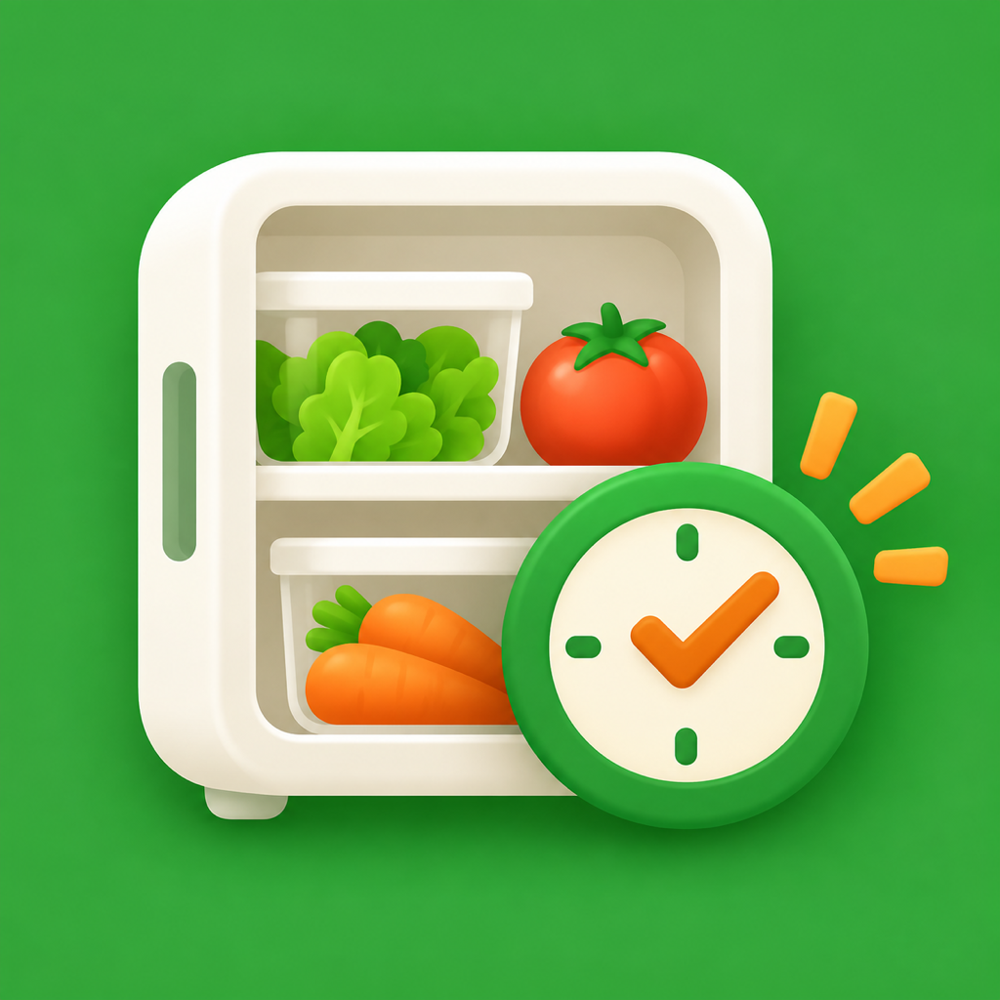

식품 등록하기
이름과 날짜, 냉장·냉동·실온 보관 위치를 입력하세요. 포장 사진에서 날짜를 찾을 수도 있어요.

먹콩이식품의 소비기한을 등록하면 가까운 날짜부터 정리하고, 알림과 홈·잠금화면 위젯에서 바로 확인할 수 있어요.
처음 사용한다면
이름과 날짜, 냉장·냉동·실온 보관 위치를 입력하세요. 포장 사진에서 날짜를 찾을 수도 있어요.
기한 며칠 전, 몇 시에 알려줄지 설정하세요. 권한을 허용하면 기기에서 알림을 예약해요.
홈 화면과 잠금화면에 먹콩이 위젯을 추가하면 가장 가까운 식품을 앱을 열지 않고 볼 수 있어요.
자주 묻는 질문
날짜 부분이 밝고 선명하게 보이도록 가까이에서 촬영해 주세요. 인식 결과가 없거나 다르면 등록 화면에서 날짜를 직접 선택할 수 있어요.
먹콩이 설정의 알림 상태와 iPhone 설정의 알림 허용 여부를 확인하세요. 알림 시간 이후에 당일 식품을 등록한 경우에는 그날 알림이 예약되지 않을 수 있어요.
앱에서 식품을 저장한 뒤 홈 화면으로 이동해 잠시 기다려 주세요. 계속 반영되지 않으면 위젯을 제거한 뒤 다시 추가해 보세요.
식품 상세 화면과 처리 기록에서 항목을 삭제할 수 있어요. 해당 식품과 함께 저장한 사진도 기기에서 삭제돼요. 앱을 삭제하면 기기에 저장된 앱 데이터도 삭제됩니다.
설정에서 일회성 ‘광고 없이 사용하기’ 상품을 구매할 수 있어요. 구매 복원도 설정에서 할 수 있습니다. 광고가 표시되지 않아도 식품 등록, 알림과 위젯 기능은 그대로 사용할 수 있어요.
식품 정보와 사진은 기기에 저장되고 사진의 문자 인식도 Apple Vision으로 기기에서 처리해요. 광고 SDK가 처리할 수 있는 정보는 개인정보처리방침에서 확인할 수 있습니다.
지원
문제나 개선 의견을 남겨주세요. 앱 버전, iPhone 모델, iOS 버전과 재현 순서를 적으면 확인에 도움이 됩니다.
공개 GitHub 게시판입니다. 사진 원본, 전화번호, 이메일, 주소, 결제 정보 등 개인정보는 작성하지 마세요.